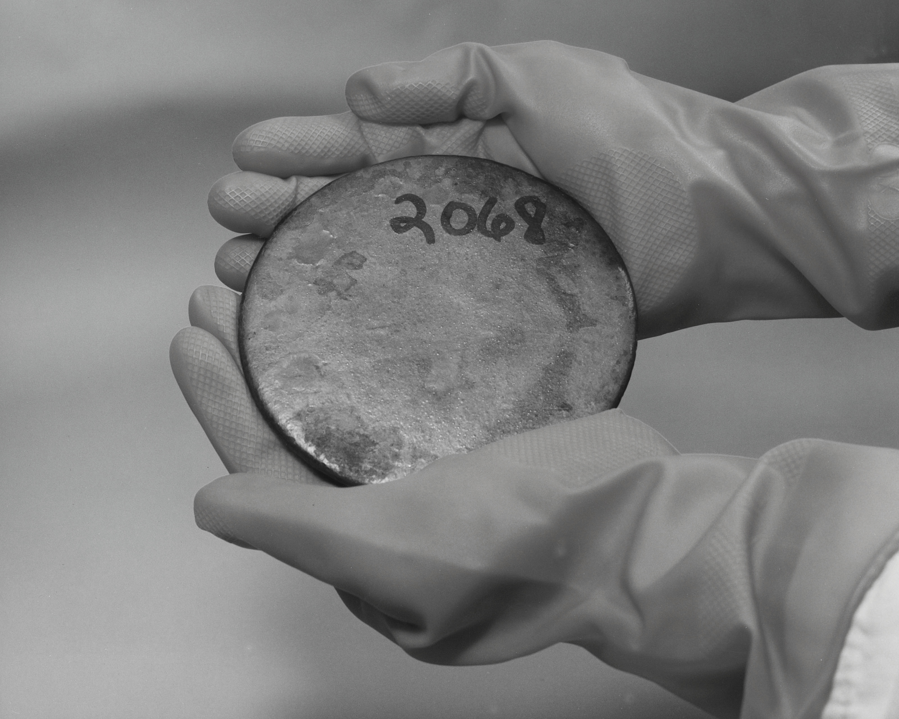
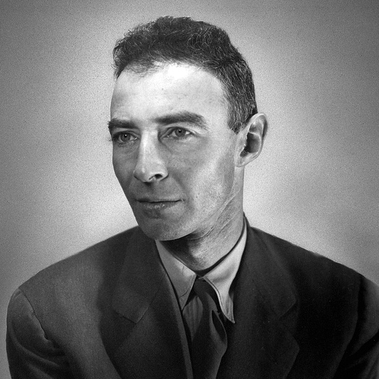
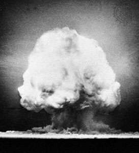
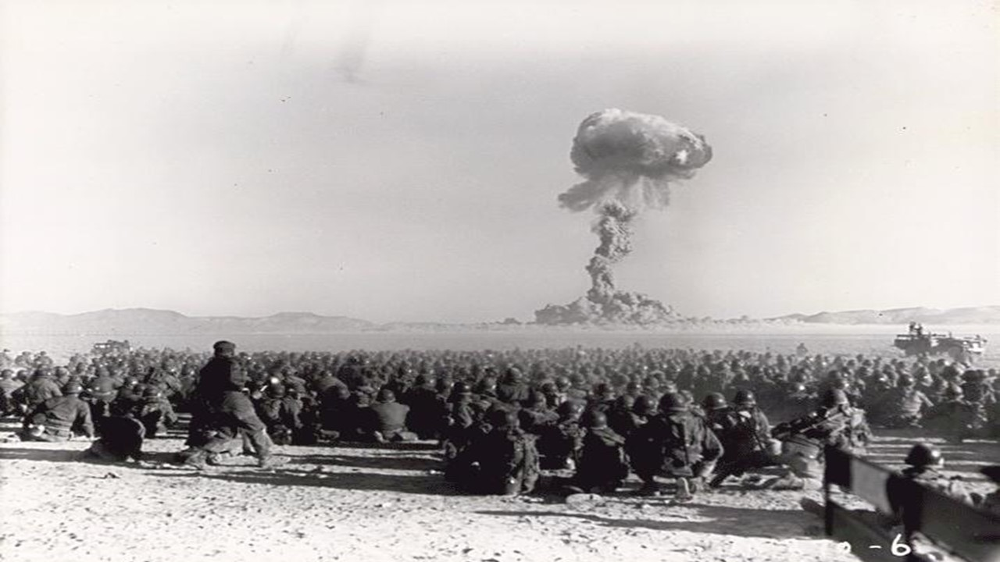
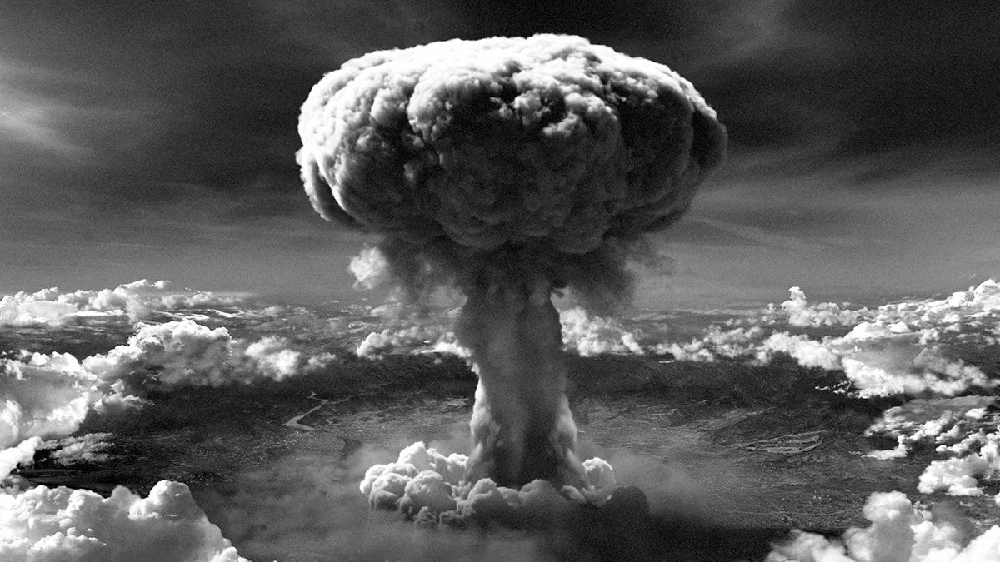
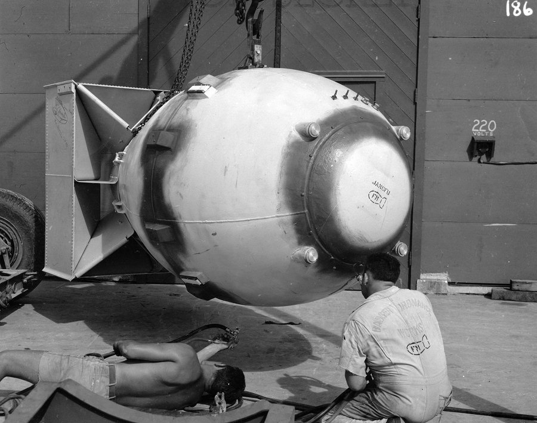

|
|
Development and Use in War |
|
|  |
With help and funding by the US, Robert Oppenheimer was cleared for research and development of an
atomic bomb. First, they had to figure out how to weaponize Uranium and other materials to make the bombs
work. Soon, Robert was leading about six thousand scientists and engineers in the Manhattan Project. |
 |
|  |
On July 16, 1945, America had successfully created a bomb and were eager
to test it; then they did over New Mexico, and it was a huge success and America
started funding new bombs to be made to try to force Japan’s surrender. |
 |
|  |
Unfortunately since Japan refused Franklin Roosevelt ordered Hiroshima
to get hit with Little Boy, which was the name of the bomb used on Hiroshima.
Still not surrendering, three days later Fat Man was dropped on Nagasaki which
forced Japan’s surrender. |
 |